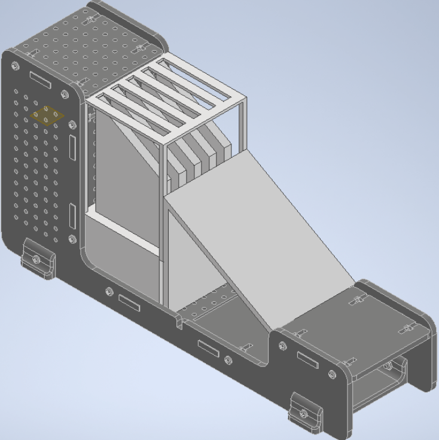
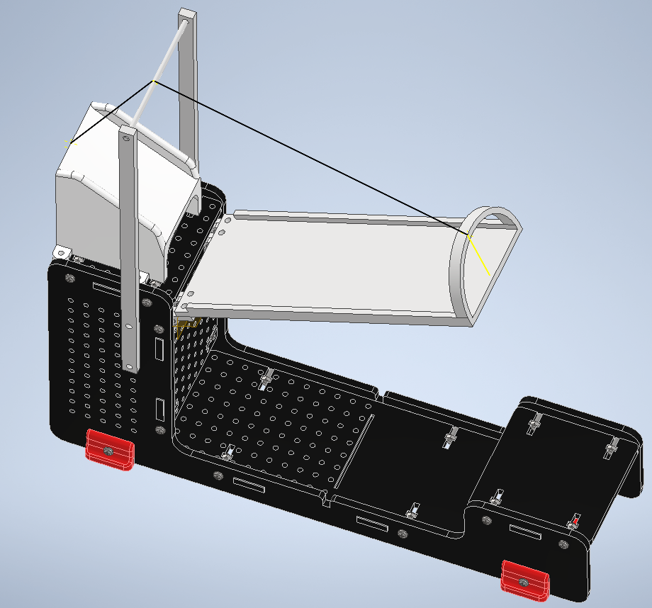

Project Narrative
The ultimate goal of this project was to increase the efficiency of a hypothetical airport by automating time consuming tasks. This project was important because it introduced us to the engineering process through hands-on work, allowing us to take concepts and systems learned academically and apply them to a real problem. The project tasked us with creating three automated solutions: a method of sorting luggage, a method of transporting luggage from one platform to another, and a method of organizing and summarizing flight data.
We were presented with each problem sequentially. The first problem we were presented with was to transport the luggage from one platform to another. Our team brainstormed ideas on potential solutions and eventually we settled on one of my designs as depicted to the right.
We spent a few weeks refining the design using the CAD software Inventor and we began manufacturing it using 3D printing when we ran into our first major obstacle. Unfortunately, due to a miscommunication with our teaching assistant and professor, we weren't informed until the manufacturing stage that our design did not meet the specifications of the project. Despite this setback and the lost time our team was able to persevere, to save as much time as possible I brianstormed, selected, and modeled a replacement design the same day. Thanks to the hard work of our team we were able to successfully implement this solution despite losing so much time.
The second problem that we were presented with was the sorting of luggage by using python to control a robotic arm. The system for identifying the luggage destination and subsequently transporting it from its input location to the destination was uncomplicated in theory. The problem that we faced was more of an application problem. The work of identifying movements and coordinates that could consistently pick up the luggage and transport it to the target location was tedious and mostly consisted of trial and error. Our team created our final solution by identifying the coordinates of key locations for the robotic arm during the early weeks of the project and then identifying and fixing problems with the arm’s movements to those locations during the later weeks of the project.
The third problem that our group created solutions to is the organization and presentation of flight data. The basic design of the solution was to have individual functions that organized and reformatted input data from text files in python and then taking that data and displaying it using the turtle graphics library. In the early weeks of the project our group brainstormed solutions to organizational problems and planned formatting functions in flowchart format. [img]. As the project progressed we assigned ourselves functions to program and worked on them individually. As the end of the project approached our group started to focus on other aspects of the project and the flight data functions were neglected. We revisited the flight data component close to the project deadline and realized it was incomplete. To make sure that the project would be completed on time I took it upon myself to take the functions, modify them if necessary, create the data visualization function and finally feed the functions into it on my own. Fortunately my strategy for completing that aspect of the project worked out.
We did our interview and demonstrated our solutions to a teaching assistant. Unfortunately during our luggage sorting demonstration the arm failed to transport a luggage piece despite it working during our testing because of the finickiness of the system. However the project was a success for the most part with both our luggage platform transporter and data organization and display system working flawlessly. Compared to hypothetical human operated systems our solutions would save both money on labour and time for execution.
~ made with tears in VScode |HTML|JS|CSS| ~